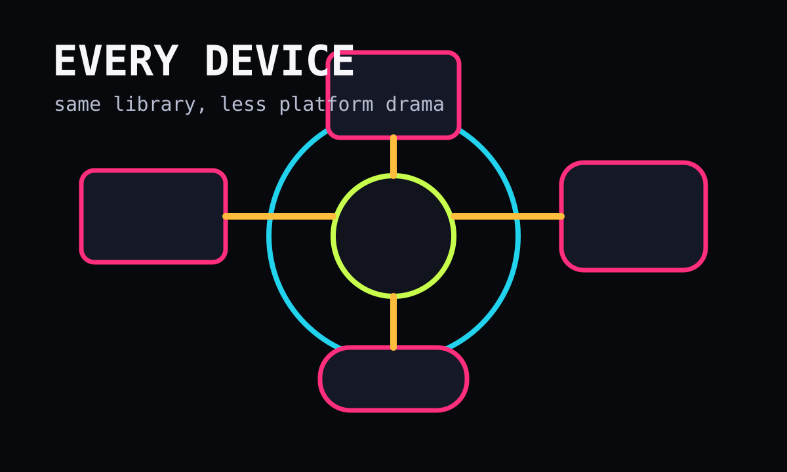

PC, Console and Mobile Are Blending
Players increasingly expect their games, saves and communities to move across devices.

TL;DR
Gamers do not care about platform walls as much as companies do.
Why gamers care
People want to start fast, continue anywhere and not rebuild their library every time.
Move
Use web discovery, local library and future desktop saves as one connected flow.
The short version
A lot of players jump between phone, laptop, console, handheld and browser. The old idea of one device being “the gaming place” is fading.
Why it matters
If your favorites, saves and history do not move with you, the platform feels old. Discovery should happen anywhere, while serious play can happen on the best device.
For Arcade World
The website should be the front door. The local player and desktop app should be the power-user layer.
Sources and further reading
Keep exploring
Open the Game Room or visit the latest stories.